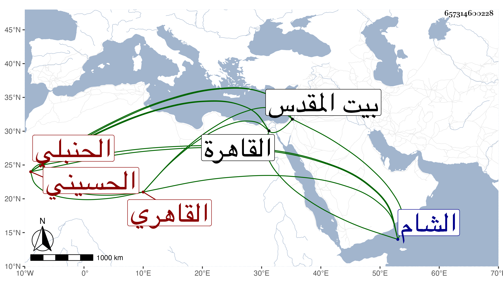

0902Sakhawi.DawLamic.ITO20230111-ara1.EIS1600.657314600228
Biography ID: 657314600228
44
محمد بن أحمد بن علي الشمس القاهري الحسيني سكنا الحنبلي ويعرف بالغزولي . ولد سنة ثمان وسبعين وسبعمائة بالقاهرة ونشأ بها فحفظ القرآن وجوده على الشمس بن الأعمى قال وكان تاجرا متقدما في القراءات والفخر البلبيسي الإمام وحفظ كتبا منها ألفية ابن مالك وقرأ في النحو على عبد الحق ولم ينسبه وفيه وفي المنطق والمعاني والبيان والحكمة على المجد اسماعيل الرومي نزيل البيبرسية وفي الفقه على البرهان الصواف ولازم ابن زقاعة في أشياء وعرض عليه الألفية وكتب له الإجازة نظما رواه لي عنه وكان أحد صوفية البيبرسية ممن ينسب لعلم الحرف ولذا لم يكن بالرضى وكأنه لذاك اختص بالشيخ محمد ابن سلطان القادري فقد كان أيضا يذكر به ، وحج ودخل الشام لأجل تركة أبيه وزار القدس واقتنى كتبا في فنون مع مشاركة في الجملة وسكون . مات بعد تعلله نحو ثلاث سنين في ربيع الأول سنة ثمان وخمسين وهو جد الشمس محمد ابن بيرم الحنبلي لأمه رحمه الله وعفا عنه .
